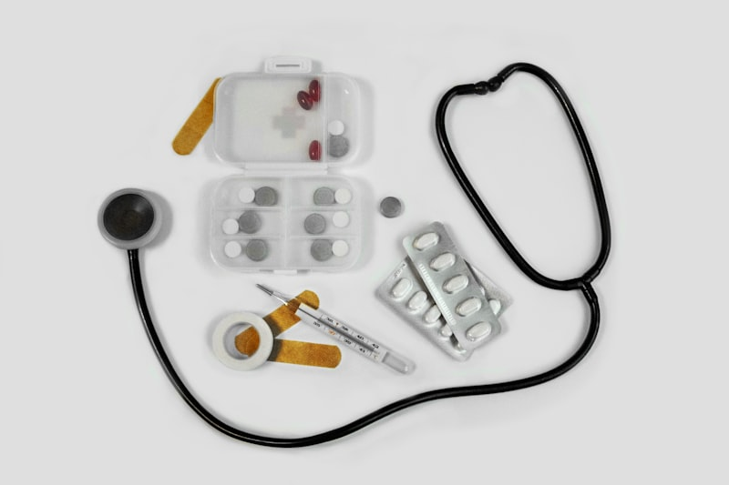
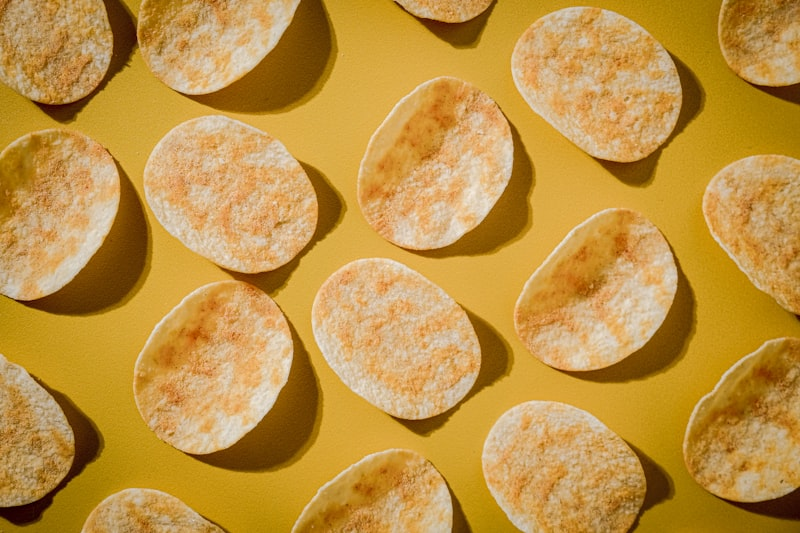

Tu Sistema de Protección Hormonal
¿Alguna vez sentiste un hambre desesperante de repente, temblor en las manos, mareo o esa sensación de que 'necesitas comer algo YA'?
Eso es una bajada de glucosa — y es una señal clara de que tu sistema hormonal necesita atención.
Cuando pasas muchas horas sin comer, cuando comes solo carbohidratos simples, o cuando tu insulina está desregulada, tu cuerpo entra en modo de emergencia: libera cortisol y adrenalina para subir la glucosa, lo que genera esos síntomas incómodos y un ciclo de antojos incontrolables.
La buena noticia: esto es 100% prevenible con hábitos simples.
Esta guía te da un sistema completo de prevención con checklists diarios, protocolos de acción y un kit de emergencia que siempre deberías tener a mano.
• 🛡️ Prevención es la clave — el 90% de las bajadas se evitan con hábitos correctos
• ⚡ Acción rápida — saber qué hacer en los primeros 5 minutos marca toda la diferencia
• 🎒 Kit siempre listo — nunca te dejes agarrar desprevenida
⚠️ Señales de Alerta — Reconoce los Síntomas
Tu cuerpo te avisa cuando la glucosa baja demasiado. Aprende a leer estas señales para actuar ANTES de que se conviertan en un problema serio.
- ⬜ Hambre intensa y repentina — aparece 'de la nada'
- ⬜ Temblor leve en las manos — especialmente al escribir o sostener objetos
- ⬜ Sudor frío — transpiración sin esfuerzo físico
- ⬜ Nerviosismo o ansiedad sin causa aparente
- ⬜ Dificultad para concentrarte — sientes la mente 'en blanco'
- ⬜ Irritabilidad — te molestas por cosas que normalmente no te afectan
- Si marcaste 2 o más señales → ve directamente a la tarjeta de Protocolo de Acción Rápida
- Estas señales aparecen porque tu cerebro depende de glucosa para funcionar
- Tu cuerpo libera adrenalina y cortisol para 'rescatar' la situación — de ahí el temblor y la ansiedad
- La mayoría de mujeres después de los 40 experimentan esto con más frecuencia por cambios hormonales
- ⬜ Mareo fuerte o visión borrosa
- ⬜ Debilidad extrema — las piernas no te sostienen bien
- ⬜ Dolor de cabeza intenso
- ⬜ Confusión — no puedes hablar o pensar con claridad
- ⬜ Piel pálida o grisácea
- ⬜ Sensación de desmayo
- 🚨 Si hay CONFUSIÓN o DESMAYO → llama a emergencias inmediatamente
- No intentes conducir ni estar de pie — siéntate o recuéstate de lado
- Si estás sola, llama a alguien de confianza ANTES de que empeore
- Nunca fuerces comida a alguien que está confundida o inconsciente — riesgo de ahogamiento
- ❌ Saltar comidas — especialmente el desayuno
- ❌ Comer solo carbohidratos simples (pan blanco, galletas, jugos)
- ❌ Hacer ejercicio intenso en ayunas
- ❌ Tomar alcohol sin haber comido
- ❌ Pasar más de 4-5 horas sin comer
- ❌ Estrés crónico — el cortisol agota tus reservas de glucosa
- La causa #1 es saltear comidas: tu cuerpo no tiene combustible y entra en modo emergencia
- Comer solo carbohidratos simples causa un pico rápido seguido de una caída brusca
- El ejercicio en ayunas quema glucosa que no tienes — receta para mareos y temblor
- El alcohol bloquea la producción de glucosa en el hígado — nunca tomes sin comer antes

📋 Tu Checklist de Prevención Diaria
La prevención es tu superpoder. Estos 7 hábitos diarios mantienen tu glucosa estable y eliminan el 90% de las bajadas. Márcalos cada día hasta que sean automáticos.
- ⬜ HÁBITO 1 — Como cada 3-4 horas (no salto ninguna comida)
- ⬜ HÁBITO 2 — Cada comida incluye proteína (huevo, pollo, pescado, legumbres)
- ⬜ HÁBITO 3 — Nunca como carbohidratos solos (siempre con proteína o grasa)
- ⬜ HÁBITO 4 — No hago ejercicio en ayunas (como algo ligero antes)
- ⬜ HÁBITO 5 — No tomo alcohol sin haber comido proteína primero
- ⬜ HÁBITO 6 — Duermo 7-8 horas (el sueño regula mis hormonas del hambre)
- ⬜ HÁBITO 7 — Tengo mi kit de emergencia conmigo (bolso, oficina, auto)
- Imprime esta lista y pégala en tu refrigerador o espejo del baño
- Cada noche antes de dormir, revisa cuántos hábitos cumpliste hoy
- Meta de la semana 1: cumplir 5 de 7 hábitos al día
- Meta del mes 1: los 7 hábitos se sienten naturales y automáticos
- ⬜ AL DESPERTAR — Tomar 1 vaso grande de agua (la deshidratación empeora todo)
- ⬜ DENTRO DE 1 HORA — Desayunar con proteína + grasa + carbohidrato complejo
- ⬜ VERIFICAR — ¿Tengo snack en mi bolso para media mañana?
- ⬜ SI HAGO EJERCICIO — Comer algo ligero 30 min antes (banana + nueces)
- Desayuno ideal: huevos revueltos + aguacate + pan de granos = estabilidad de 4+ horas
- Opción rápida: yogur griego + avena + frutos secos = listo en 3 minutos
- Opción express: smoothie de proteína + banana + mantequilla de maní
- NUNCA salgas de casa sin desayunar — es la principal causa de bajadas a media mañana
- ⬜ CENA EQUILIBRADA — Proteína + vegetales + carbohidrato complejo (no solo ensalada)
- ⬜ HORARIO — Cenar al menos 2 horas antes de dormir
- ⬜ EVITAR — No tomar alcohol como 'última bebida' del día
- ⬜ SNACK NOCTURNO — Si tienes antecedentes de bajadas, un puñado de nueces antes de dormir
- Una cena demasiado ligera (solo ensalada) puede causar bajadas durante la madrugada
- El alcohol antes de dormir bloquea la producción de glucosa del hígado mientras duermes
- Las nueces antes de dormir liberan glucosa lentamente durante la noche — protección de 6+ horas
- Si te despiertas con sudor o ansiedad a las 3am, puede ser una bajada nocturna — habla con tu médico

⚡ Protocolo de Acción Rápida
Si sientes que tu glucosa está bajando, estos 4 pasos te estabilizan en 15-20 minutos. Memorízalos — la velocidad de tu respuesta marca la diferencia.
- PASO 1 ➜ DETENTE — Siéntate, no camines ni conduzcas
- PASO 2 ➜ TOMA AZÚCAR RÁPIDA — UNA de estas opciones:
- • ½ vaso de jugo de naranja natural
- • 1 cucharada de miel disuelta en agua
- • 1 cucharada de azúcar en medio vaso de agua
- • 3-4 caramelos duros (no chocolate)
- PASO 3 ➜ ESPERA 15 MINUTOS — Quédate sentada y respira
- PASO 4 ➜ COME PROTEÍNA — Para mantener estable:
- La regla 15-15: toma azúcar rápida → espera 15 minutos → evalúa → repite si necesitas
- NO uses chocolate como rescate — la grasa retarda la absorción del azúcar
- Después del azúcar rápida, SIEMPRE come proteína para evitar una segunda caída
- Si los síntomas no mejoran después de 15 min, repite el PASO 2 una vez más
- ✅ Puñado de nueces o almendras (10-15 unidades)
- ✅ 1 trozo de queso con galletas integrales
- ✅ Yogur griego natural
- ✅ 1 huevo duro (si lo tienes preparado)
- ✅ Mantequilla de maní con rodajas de manzana
- ✅ Un puñado de frutos secos mixtos
- Come la proteína INMEDIATAMENTE después de que pasen los 15 minutos del rescate
- La proteína mantiene tu glucosa estable las siguientes 2-3 horas
- Sin este paso, el azúcar rápida sube tu glucosa → tu insulina reacciona → vuelve a caer
- Después del episodio, come tu siguiente comida completa a la hora normal — no la saltes
- 🔴 La persona está confundida y no puede hablar coherentemente
- 🔴 Pérdida de conciencia o desmayo
- 🔴 Convulsiones
- 🔴 No mejora después de 2 rondas de la Regla 15-15
- 🔴 No puede tragar líquidos de forma segura
- LLAMA A EMERGENCIAS inmediatamente — no esperes 'a ver si mejora'
- NO fuerces comida ni bebida a alguien confundida o inconsciente — riesgo de ahogamiento
- Recuéstala de lado (posición de recuperación) mientras llega la ayuda
- Mantén la calma y describe los síntomas claramente al operador de emergencias

🎒 Tu Kit de Emergencia — Siempre Contigo
Arma estos kits y tenlos siempre listos. Es como llevar un paraguas — ojalá no lo necesites, pero si llueve, te salva.
- 1️⃣ Sobrecitos de miel o azúcar (2-3 unidades) → rescate rápido
- 2️⃣ Bolsita de frutos secos mixtos (30g) → proteína de mantenimiento
- 3️⃣ Barra de granola con proteína → opción de emergencia completa
- 4️⃣ Botella de agua pequeña → siempre necesaria
- 5️⃣ Teléfono cargado → para llamar si necesitas ayuda
- Prepara 3 kits iguales: uno para el bolso, uno para la oficina, uno para el auto
- Revisa y renueva los snacks cada 2 semanas — que no estén vencidos ni aplastados
- Los sobrecitos de miel son perfectos: no se derraman, no pesan, duran meses
- Guarda el kit en un compartimiento fijo de tu bolso — siempre el mismo lugar
- 1️⃣ Frutos secos en frasco hermético (almendras, nueces, maní)
- 2️⃣ Mantequilla de maní individual (sobrecitos)
- 3️⃣ Galletas integrales (paquete sellado)
- 4️⃣ Jugo de naranja en caja (larga vida, sin refrigerar)
- 5️⃣ Caramelos duros (3-4 unidades para emergencia)
- 6️⃣ Agua — siempre tener una botella en tu escritorio
- Guarda todo en un cajón específico de tu escritorio — que todos sepan dónde está
- Avisa a una compañera de confianza sobre tu situación y dónde está tu kit
- El jugo en caja de larga vida es clave: no necesita refrigerador y dura meses
- Renueva los snacks cada mes al inicio — ponlo como recordatorio en tu celular
- 1️⃣ Barra de granola o proteína (resistente al calor)
- 2️⃣ Frutos secos en bolsa sellada
- 3️⃣ Caramelos duros (no se derriten como el chocolate)
- 4️⃣ Botella de agua sellada
- ⚠️ REGLA DE ORO: NUNCA conduzcas si sientes síntomas de bajada
- Si sientes síntomas mientras conduces → DETENTE de forma segura, enciende las luces de emergencia
- Come algo del kit ANTES de continuar — espera al menos 15 minutos
- Evita chocolate o barras blandas en el auto — el calor las derrite
- Los frutos secos y caramelos duros son ideales: resisten temperatura y duran semanas

🌟 Tu Rutina Semanal Anti-Bajadas
Más allá de los hábitos diarios, estas rutinas semanales refuerzan tu sistema de protección y aseguran que nunca te agarren desprevenida.
- ⬜ Preparar snacks para la semana (bolsitas de frutos secos porcionados)
- ⬜ Cocinar proteínas base (pollo desmenuzado, huevos duros, frijoles)
- ⬜ Revisar y reponer los 3 kits de emergencia (bolso, oficina, auto)
- ⬜ Planificar las 5 cenas de la semana (que todas tengan proteína)
- ⬜ Hacer lista de compras con alimentos protectores
- Dedica 30 minutos el domingo a preparar tu semana de protección
- Cocina un lote grande de proteína que puedas usar de diferentes formas
- Porciona 5 bolsitas de frutos secos (30g cada una) para tu snack diario
- Revisa si los snacks de tus kits están frescos — renueva los que estén por vencer
- ── PROTEÍNAS (siempre en casa) ──
- ✅ Huevos — la proteína más versátil y rápida de preparar
- ✅ Yogur griego natural — snack + desayuno + salsa
- ✅ Queso — para emergencias rápidas (no necesita preparación)
- ✅ Pollo/pescado — proteína base para comidas principales
- ✅ Frutos secos mixtos — tu snack protector #1
- ── CARBOHIDRATOS INTELIGENTES ──
- ✅ Avena tradicional (NO instantánea) — desayunos estables
- ✅ Pan de granos/semillas — IG bajo, saciante
- ✅ Legumbres (frijoles, lentejas, garbanzos) — estabilizadores naturales
- ── KIT DE RESCATE ──
- ✅ Miel en sobrecitos o frasco pequeño
- ✅ Jugo de naranja en caja (larga vida)
- ✅ Barras de granola con proteína
- Ten siempre al menos 3 fuentes de proteína rápida en tu refrigerador
- Los huevos duros se preparan en lote y duran 5 días en el refrigerador
- Compra frutos secos en bolsa grande y porciónalos tú — más económico
- El yogur griego + avena + frutos secos = 3 ingredientes que cubren desayuno y snack de toda la semana
- 📌 RECONOCER — Señales de bajada: temblor, sudor frío, confusión, irritabilidad
- 📌 MANTENER CALMA — No asustarse; transmitir tranquilidad
- 📌 OFRECER — Jugo, miel con agua, o caramelo si la persona puede tragar
- 📌 ESPERAR — 15 minutos después del azúcar rápida, luego dar proteína
- 📌 NUNCA — Forzar comida si la persona está confundida o no puede tragar
- 📌 LLAMAR — A emergencias si hay desmayo, convulsiones o no mejora en 30 min
- Habla con tu pareja y familia sobre esto — no es dramático, es prevención inteligente
- Muéstrales dónde están tus kits de emergencia en casa y en el auto
- Enséñales la Regla 15-15: azúcar rápida → esperar 15 min → proteína
- Que tengan el número de emergencias guardado con acceso rápido en su celular